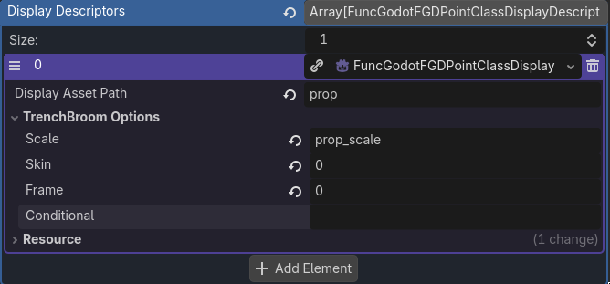

Generating Class Properties
Generating Music Properties from an AudioStreamInteractive Resource
Consider the case where you have an AudioStreamInteractive Resource with all of the music for your game. If your game has a lot of music, it will be time consuming and possibly error-prone to manually add these to your class properties. This would be a case where using an entity extension script would be appropriate.
To create an Entity Extension Script, you firstly need to create a script and make it an Editor Script by adding @tool to it.
Additionally, this script must inherit from RefCounted.
You then add this script to the Entity Extension Script field in your Entity Resource.
In your Entity Extension Script, you then add a function named _func_godot_attach_properties with 1 parameter that is of type FuncGodotFGDEntityClass.
This should look as follows:
@tool
extends RefCounted
func _func_godot_attach_properties(entity: FuncGodotFGDEntityClass) -> void:
return;
_func_godot_attach_properties is a function that runs during an FGD Export that allows you to change the entity that is
passed to it before your class properties are compiled into your FGD. This is quite powerful, allowing you to change your class properties
when you export, so if the values of a class property are tied to a resource, you can have a single point of truth. In this example, we're
making the single point of truth an AudioStreamInteractive resource. I will not be covering how to make an AudioStreamInteractive resource
in this example. Once you have an AudioStreamInteractive you can make load this in the script. Below is the function attaching all the music
clips in the AudioStreamInteractive as a Choice.
@export var audioStreamInteractive : AudioStreamInteractive = preload("res://assets/audio/musicInteractive.tres")
func _func_godot_attach_properties(entity: FuncGodotFGDEntityClass) -> void:
if !audioStreamInteractive:
return
var clips: Array[String] = []
for i in range(audioStreamInteractive.clip_count):
clips.push_back(audioStreamInteractive.get_clip_name(i));
var dictionaryForClassProps: Dictionary[String, String] = {}
for clip in clips:
dictionaryForClassProps[clip] = clip;
entity.class_properties["music"] = dictionaryForClassProps;
entity.class_property_descriptions["music"] = [
"Music to play",
clips[0]
];
Reading through the code, you can see we firstly check if the resource is valid. If it is not valid you might want to print an error or warning. We then prepare an array of all the clip names. We then loop through all the clips and add their clip name to that array. We then convert this array into a dictionary, as this is the format we need for choices in our class properties. We then set the class properties key for music to be that dictionary. As choices need a default value, we then also add a class property description which has the default value as the first element of that array.
NOTE: You can also generate class properties for base classes with entity extension scripts, so if multiple entities share the same generated class properties, consider using a base class for it.
Generating class properties for an ent_prop
The power of this system comes together when using this in combination with your own custom resources. To begin with, we will define the following resources in code:
Prop resource
@toolclass_name Prop
extends Resource
@export var id := "PROP_NON"
## This should be a folder probably in tbmodels
@export var tbmodel_folder := "tbmodels/props/"
## This should be the actual name of the model including .glb part
@export var tbmodel_name := "prop.glb"
## Prop scene
@export var propScene:PackedScene = null
All props resource
@tool
class_name AllProps
extends Resource
@export var props: Array[Prop] = []
func get_prop_by_tbmodel(tbmodel: String) -> Prop:
var idx := props.find_custom(
func(prop: Prop):
return tbmodel == prop.tbmodel_folder+prop.tbmodel_name;
)
if idx == -1:
return null
return props[idx];
We then make an ent_prop resource, define it as normal, and create an entity extension script for it. We can then define an AllProps resource and add to its array of props, our own defined props with a scene to create, and the
display model inside of Trenchbroom. We then attach all these props as a big choice property in _func_godot_attach_properties.
@tool
extends RefCounted
@export var allProps: AllProps = preload("res://assets/resources/AllProps.tres")
func _func_godot_attach_properties(entity: FuncGodotFGDEntityClass) -> void:
if !allProps:
return
var propDict : Dictionary[String, String]
for prop:Prop in allProps.props:
propDict[prop.id] = prop.tbmodel_folder+prop.tbmodel_name
entity.class_properties["prop"] = propDict;
entity.class_property_descriptions["prop"] = [
"Prop to use",
propDict[propDict.keys()[0]]
];
This has produced a choice property where prop IDs then have a value which is the model in our tbmodels folder. We can then make use of display descriptors to display this by making the Display Asset Path prop. This means it will refer to the class property we set for prop, and if that is a valid model, display that. You can additionally have scale, skin and frame controlled by a class property.

And then in our entity's script when we apply properties...
@tool
extends Node3D
@export var allProps := preload("res://assets/resources/AllProps.tres")
@export var mapSettings := preload("res://func_godot/config/MapSettings.tres")
func _func_godot_apply_properties(props: Dictionary) -> void:
if !props.has("prop"):
queue_free()
return
var p := allProps.get_prop_by_tbmodel(props["prop"])
if !p:
queue_free()
return
var prop := p.propScene.instantiate()
add_child(prop)
prop.name = self.name+"_prop"
prop.owner = owner
self.scale = Vector3.ONE
if props.has("prop_scale"):
self.scale *= float(props["prop_scale"])/float(mapSettings.inverse_scale_factor)
What this code is doing, is using the same AllProps resource we defined,finding the prop resource in it, getting the scene to instantiate from that, and then instantiating it.
WARNING: Setting fields this way is a destructive action. If you manually set up a class property, it is possible to override them doing this. Be careful not to override class properties you don't intend to.